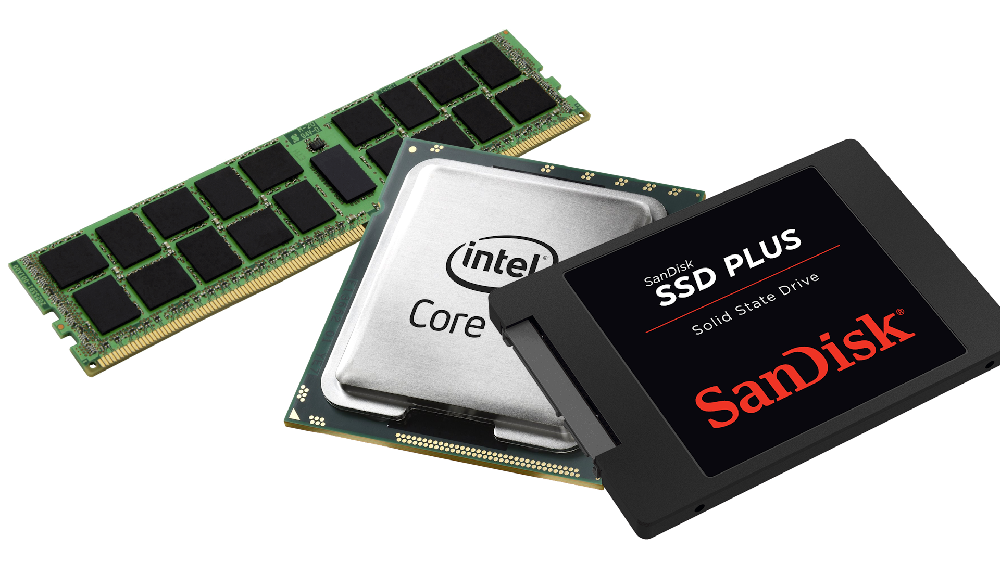

ITDucanet BRNO
IT podpora, která mluví vaší řečí, od roku 1997
IT podpora, která mluví vaší řečí, od roku 1997
1. USB disk (bude naformátován, takže si uložte svá data)
2. Rufus (program pro vytváření bootovatelných USB flash disků z ISO)
3. ISO soubor (vysvětleno v druhém kroku)
1. Minimálně 512MB RAM Doporučeno 2GB RAM
2. Minimálně 8GB úložiště Doporučeno 16GB úložiště
3. Minimálně CPU - Intel Core 2 Duo (1.06 GHz)
4. integrovaná grafika z čipsetů Intel nebo AMD z počátku 2000 let je dostačující
TPM 2.0 a Secure Boot není potřeba.
Přejděte na web Tiny, nebo na Internet Archive a vyberte verzi, kterou chcete nainstalovat. Zkontrolujte, zda váš systém podporuje verze x64, nebo x32, zjistíme to tak, že přejdeme do nastavení > systém > o systému. Pokud uvidíte: „x64-based processor“ (procesor založený na x64), nainstalujte verzi TinyOS x64, pokud vidíte „x32/x86-based processor“ (procesor založený na x32/x86), použijte verzi TinyOS x86.
Stáhněte si soubor ISO pomocí odkazu vedle něj.
ISO soubor si můžete buď přímo stáhnout z Internetového archivu, nebo si stáhnout torrent a použít torrentového klienta, jako je qBittorrent. Použití torrentu je rychlejší než přímé stahování.
Otevřete Rufus, vyberte USB a vyberte ISO, vyberte schéma oddílů. Obvykle by to mělo být GPT, pokud nepoužíváte starší systém. Zde je návod, jak zkontrolovat, které schéma oddílů vaše zařízení používá: Vyhledejte „Správa disků“, Najděte disk, na který budete systém instalovat, nikoli flash disk. klikněte pravým tlačítkem myši a vyberte vlastnosti..
Otevřete Rufus, vyberte USB a vyberte ISO, vyberte schéma oddílů. Obvykle by to mělo být GPT, pokud nepoužíváte starší systém. Zde je návod, jak zkontrolovat, které schéma oddílů vaše zařízení používá: Vyhledejte „Správa disků“, Najděte disk, na který budete systém instalovat, nikoli flash disk. klikněte pravým tlačítkem myši a vyberte vlastnosti..